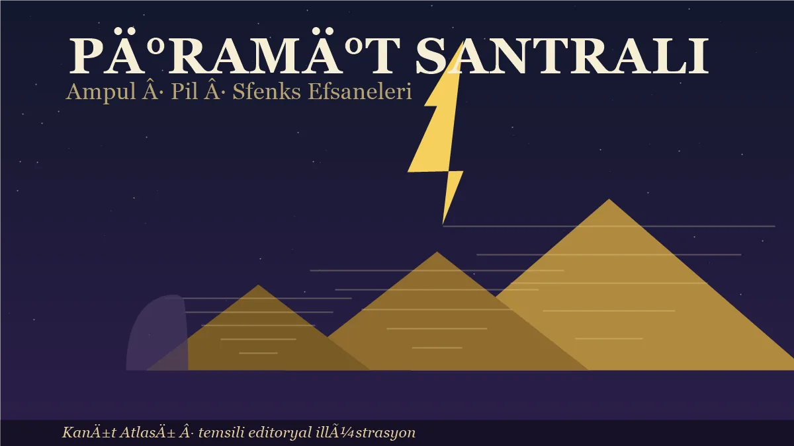
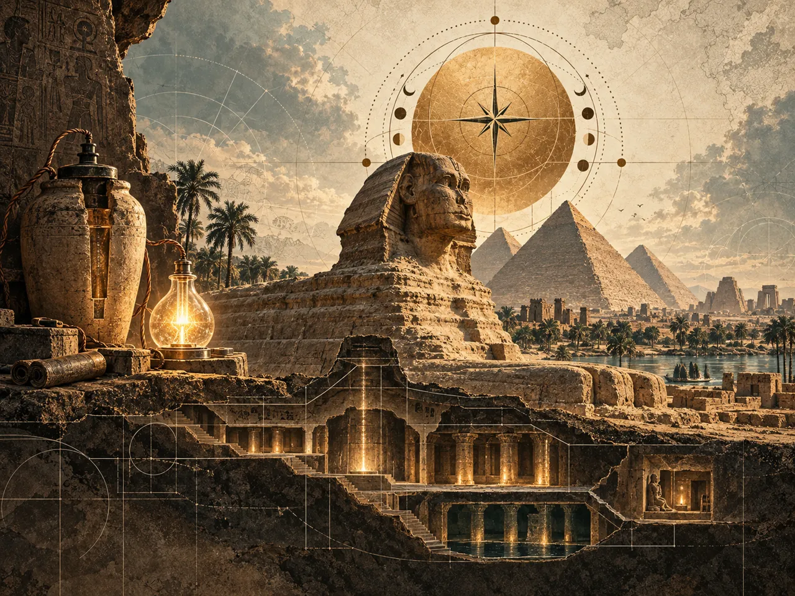

<title>Piramit Santrali: Ampul, Pil ve Sfenks Efsaneleri</title>
<link rel="preconnect" href="https://fonts.googleapis.com">
<link rel="preconnect" href="https://fonts.gstatic.com" crossorigin>
<link rel="stylesheet" href="https://fonts.googleapis.com/css2?family=Fraunces:opsz,wght,SOFT,WONK@9..144,300..900,0..100,0..1&family=Karla:wght@300..800&family=JetBrains+Mono:wght@400;600&display=swap">

<style>
:root{
  --bg:#F1EDE3; --surface:#F7F4EC; --surface-2:#E2DDD0;
  --ink:#1A1712; --ink-2:#4C463C; --ink-3:#7A7365;
  --rule:#C9C2B2; --rule-soft:#D9D3C4;
  --accent:#34517A; --accent-ink:#27406A; --accent-soft:#DCE4EE;
  --stone:#8A7345; --stone-ink:#6E5B33; --stone-soft:#EDE5D2;
  --display:"Fraunces",Georgia,"Times New Roman",serif;
  --body:"Karla","Helvetica Neue",Arial,sans-serif;
  --mono:"JetBrains Mono",ui-monospace,Consolas,monospace;
  --measure:68ch; --wrap:1180px;
}
@media (prefers-color-scheme: dark){
  :root:not([data-theme="light"]){
    --bg:#131109; --surface:#1B1912; --surface-2:#26231A;
    --ink:#E7E2D3; --ink-2:#ABA592; --ink-3:#7A7365;
    --rule:#34301F; --rule-soft:#28241A;
    --accent:#8FB0D8; --accent-ink:#A6C2E8; --accent-soft:#182332;
    --stone:#C7AC80; --stone-ink:#D8C199; --stone-soft:#2A2418;
  }
}
:root[data-theme="dark"]{
  --bg:#131109; --surface:#1B1912; --surface-2:#26231A;
  --ink:#E7E2D3; --ink-2:#ABA592; --ink-3:#7A7365;
  --rule:#34301F; --rule-soft:#28241A;
  --accent:#8FB0D8; --accent-ink:#A6C2E8; --accent-soft:#182332;
  --stone:#C7AC80; --stone-ink:#D8C199; --stone-soft:#2A2418;
}

*,*::before,*::after{box-sizing:border-box}
body{background:var(--bg);color:var(--ink);font-family:var(--body);font-size:1.0625rem;line-height:1.65;-webkit-font-smoothing:antialiased}
::selection{background:var(--accent-soft);color:var(--ink)}
a{color:var(--accent-ink);text-underline-offset:3px}
:focus-visible{outline:2px solid var(--accent);outline-offset:3px}
h1,h2,h3,h4{font-family:var(--display);font-weight:600;text-wrap:balance;margin:0;font-variation-settings:"SOFT" 18,"WONK" 1;letter-spacing:-.01em}
.wrap{max-width:var(--wrap);margin-inline:auto;padding-inline:clamp(1.25rem,4vw,3rem)}
.prose{max-width:var(--measure)}
.prose p{margin:0 0 1.05em}
.prose p:last-child{margin-bottom:0}
.mono{font-family:var(--mono);font-variant-numeric:tabular-nums}
.eyebrow{font-family:var(--mono);font-size:.72rem;font-weight:600;letter-spacing:.13em;text-transform:uppercase;color:var(--ink-3);margin:0}

.hero{border-bottom:1px solid var(--rule);padding-block:clamp(3rem,7vw,5.5rem) clamp(2rem,4vw,3rem);background:radial-gradient(120% 90% at 85% 0%, var(--accent-soft) 0%, transparent 58%)}
.hero__inner{display:flex;flex-direction:column;gap:1.5rem}
.hero h1{font-size:clamp(2.5rem,7vw,4.7rem);line-height:1.15;font-weight:700;font-variation-settings:"SOFT" 8,"WONK" 1;letter-spacing:-.025em;max-width:13ch}
.hero__lede{font-family:var(--display);font-size:clamp(1.15rem,2.2vw,1.5rem);line-height:1.42;color:var(--ink-2);max-width:48ch;font-weight:400;font-variation-settings:"SOFT" 30,"WONK" 0}
.hero__lede strong{color:var(--ink);font-weight:600}
.series{font-family:var(--mono);font-size:.7rem;letter-spacing:.12em;text-transform:uppercase;color:var(--accent-ink);border:1px solid var(--accent);padding:.28rem .6rem;align-self:flex-start}
.hero-figure{margin-top:.6rem;border:1px solid var(--rule);border-radius:14px;overflow:hidden;background:var(--surface)}
.hero-figure img,.inline-figure img{display:block;width:100%;height:auto}
.hero-figure figcaption,.inline-figure figcaption{padding:.55rem .9rem;font-size:.78rem;color:var(--ink-3);border-top:1px solid var(--rule-soft)}
.inline-figure{margin:1.6rem 0;border:1px solid var(--rule);border-radius:14px;overflow:hidden;background:var(--surface);max-width:880px}
.stats{display:grid;gap:1px;background:var(--rule);grid-template-columns:repeat(auto-fit,minmax(155px,1fr));border:1px solid var(--rule);margin-top:.75rem}
.stat{background:var(--bg);padding:1rem 1.15rem;display:flex;flex-direction:column;gap:.2rem}
.stat__num{font-family:var(--display);font-size:1.8rem;font-weight:700;line-height:1.05;font-variation-settings:"SOFT" 8,"WONK" 1;font-variant-numeric:tabular-nums}
.stat__num.s{color:var(--stone-ink)}
.stat__lbl{font-size:.83rem;color:var(--ink-3);line-height:1.35}

.nav{position:sticky;top:0;z-index:20;background:color-mix(in srgb, var(--bg) 88%, transparent);backdrop-filter:blur(10px);border-bottom:1px solid var(--rule)}
.nav__scroll{display:flex;gap:.15rem;overflow-x:auto;scrollbar-width:thin;padding-block:.4rem}
.nav a{flex:0 0 auto;font-family:var(--mono);font-size:.73rem;font-weight:500;letter-spacing:.05em;text-transform:uppercase;text-decoration:none;color:var(--ink-3);padding:.5rem .7rem;white-space:nowrap}
.nav a:hover{color:var(--ink);background:var(--surface-2)}
.nav a.is-active{color:var(--accent-ink);background:var(--accent-soft)}

section{padding-block:clamp(2.75rem,6vw,4.5rem);border-bottom:1px solid var(--rule-soft)}
section:last-of-type{border-bottom:0}
.sec__head{display:flex;flex-direction:column;gap:.55rem;margin-bottom:1.75rem}
.sec__head h2{font-size:clamp(1.7rem,3.4vw,2.45rem);line-height:1.08}
.sec__head .kicker{font-size:1.02rem;color:var(--ink-2);max-width:56ch;margin:0}
.note{border-left:2px solid var(--accent);background:var(--accent-soft);padding:.9rem 1.15rem;font-size:.94rem;color:var(--ink);max-width:var(--measure)}
.note.s{border-color:var(--stone);background:var(--stone-soft)}

/* opposite problems */
.opp{display:grid;gap:1px;background:var(--rule);border:1px solid var(--rule);grid-template-columns:1fr;margin-top:1.5rem}
@media(min-width:720px){.opp{grid-template-columns:1fr 1fr}}
.op{background:var(--bg);padding:1.4rem 1.5rem;display:flex;flex-direction:column;gap:.55rem}
.op .tag{font-family:var(--mono);font-size:.68rem;font-weight:600;letter-spacing:.1em;text-transform:uppercase;color:var(--ink-3)}
.op h3{font-size:1.14rem}
.op .prob{font-family:var(--display);font-size:1.3rem;color:var(--accent-ink);font-variation-settings:"opsz" 14,"SOFT" 30;font-weight:600}
.op p{margin:0;font-size:.94rem;color:var(--ink-2)}
.op ul{margin:.15rem 0 0;padding-left:1.05rem;font-size:.91rem;color:var(--ink-2);display:flex;flex-direction:column;gap:.3rem}
.op.b{background:var(--accent-soft)}

/* evidence weighing */
.weigh{display:flex;flex-direction:column;gap:1px;background:var(--rule);border:1px solid var(--rule);margin-top:1.5rem}
.wg{background:var(--bg);padding:1.35rem 1.45rem;display:grid;gap:.5rem 1.2rem;grid-template-columns:1fr}
@media(min-width:780px){.wg{grid-template-columns:minmax(150px,.6fr) 1.9fr;align-items:start}}
.wg__k{display:flex;flex-direction:column;gap:.25rem}
.wg__k b{font-size:.98rem;font-weight:700}
.wg__k .verdict{font-family:var(--mono);font-size:.66rem;font-weight:700;letter-spacing:.09em;text-transform:uppercase;padding:.18rem .42rem;align-self:flex-start}
.v-weak{background:var(--stone-soft);color:var(--stone-ink)}
.v-strong{background:var(--accent-soft);color:var(--accent-ink)}
.wg__b p{margin:0 0 .55rem;font-size:.94rem;color:var(--ink-2);max-width:66ch}
.wg__b p:last-child{margin-bottom:0}
.wg__b b{color:var(--ink)}
.wg.decisive{background:var(--accent-soft)}
.wg.decisive .wg__b p{color:var(--ink)}

/* spec table */
.tablewrap{overflow-x:auto;margin-top:1.5rem;border:1px solid var(--rule);background:var(--surface)}
table{border-collapse:collapse;width:100%;font-size:.93rem;min-width:520px}
caption{text-align:left;font-size:.84rem;color:var(--ink-3);padding:.75rem 1rem;border-bottom:1px solid var(--rule)}
th{font-family:var(--mono);font-size:.68rem;font-weight:600;letter-spacing:.08em;text-transform:uppercase;color:var(--ink-3);text-align:left;padding:.7rem 1rem;border-bottom:1px solid var(--rule)}
td{padding:.62rem 1rem;border-bottom:1px solid var(--rule-soft);vertical-align:top;color:var(--ink-2)}
tbody tr:last-child td{border-bottom:0}
tbody tr:hover td{background:var(--surface-2)}
td.k{color:var(--ink);font-weight:600;white-space:nowrap}
td.v{font-family:var(--mono);font-variant-numeric:tabular-nums;white-space:nowrap;color:var(--ink)}

/* lifecycle */
.tl{display:grid;grid-template-columns:minmax(92px,auto) 1fr;gap:0 1.4rem;margin-top:1.5rem;max-width:840px}
.tl__date{font-family:var(--mono);font-size:.8rem;font-weight:600;color:var(--ink-2);padding:.8rem 0 .1rem;text-align:right;font-variant-numeric:tabular-nums;border-top:1px solid var(--rule-soft)}
.tl__body{padding:.8rem 0 .9rem;border-top:1px solid var(--rule-soft);border-left:2px solid var(--rule);padding-left:1.4rem;position:relative}
.tl__body::before{content:"";position:absolute;left:-5px;top:1.28rem;width:8px;height:8px;border-radius:50%;background:var(--accent)}
.tl__body.s::before{background:var(--stone)}
.tl__body h4{font-size:.99rem;margin-bottom:.15rem;font-variation-settings:"SOFT" 25,"WONK" 0}
.tl__body p{margin:0;font-size:.91rem;color:var(--ink-2)}

.grid3{display:grid;gap:1px;background:var(--rule);border:1px solid var(--rule);grid-template-columns:repeat(auto-fit,minmax(245px,1fr));margin-top:1.5rem}
.card{background:var(--bg);padding:1.3rem 1.35rem;display:flex;flex-direction:column;gap:.5rem}
.card h4{font-size:1.08rem}
.card .tag{font-family:var(--mono);font-size:.68rem;font-weight:600;letter-spacing:.09em;text-transform:uppercase;color:var(--ink-3)}
.card.no .tag{color:var(--stone-ink)}
.card.yes .tag{color:var(--accent-ink)}
.card p{margin:0;font-size:.93rem;color:var(--ink-2)}
.card b{color:var(--ink)}

.verdictbox{border:1px solid var(--accent);background:var(--accent-soft);padding:1.7rem 1.8rem;margin-top:1.5rem;display:flex;flex-direction:column;gap:.9rem;max-width:74ch}
.verdictbox .eyebrow{color:var(--accent-ink)}
.verdictbox h3{font-size:1.42rem}
.verdictbox p{margin:0}
.verdictbox b{color:var(--ink)}

.open{display:flex;flex-direction:column;gap:1px;background:var(--rule);border:1px solid var(--rule);margin-top:1.5rem}
.oq{background:var(--bg);padding:1.15rem 1.3rem;display:grid;gap:.3rem .9rem;grid-template-columns:1fr}
@media(min-width:720px){.oq{grid-template-columns:minmax(215px,.85fr) 1.65fr;align-items:start}}
.oq__q{font-family:var(--display);font-size:1.02rem;color:var(--ink);font-variation-settings:"SOFT" 40,"WONK" 0}
.oq__a{margin:0;font-size:.94rem;color:var(--ink-2)}

.foot{padding-block:2.5rem 3.5rem;border-top:1px solid var(--rule);background:var(--surface)}
.foot p{font-size:.88rem;color:var(--ink-3);max-width:70ch;margin:0 0 .7rem}
.foot p:last-child{margin-bottom:0}
.foot b{color:var(--ink-2)}

@media (prefers-reduced-motion: reduce){*{animation-duration:.01ms !important;transition-duration:.01ms !important;scroll-behavior:auto !important}}
html{scroll-behavior:smooth;scroll-padding-top:4rem}
</style>

<header class="hero">
  <div class="wrap hero__inner">
    <span class="series">İnceleme 28 · Sözdebilim denetimi</span>
    <p class="eyebrow">Mısır · elektrik efsaneleri · kanıt değerlendirmesi</p>
    <h1>Piramit Santrali: Ampul, Pil ve Sfenks Efsaneleri</h1>
    <p class="hero__lede">"Mısırlılar elektriği biliyordu" cümlesi tek bir iddia değil, <strong>bir iddia ailesi</strong>. Ampul Dendera'da, pil Bağdat'ta, santral Giza'da duruyormuş gibi anlatılıyor. Bu yazı aileyi üyelerine ayırıyor — çünkü her üyenin kanıt durumu <strong>farklı</strong>, ve ailenin kendisi bu ayrımı görmemekten besleniyor.</p>

    <div class="stats">
      <div class="stat"><span class="stat__num">MÖ 54</span><span class="stat__lbl">Dendera Hathor Tapınağı'nda inşaatın başlaması</span></div>
      <div class="stat"><span class="stat__num s">0</span><span class="stat__lbl">Mısır metinlerinde elektrik, ampul veya kablo karşılığı kayıtlı sözcük</span></div>
      <div class="stat"><span class="stat__num">1936</span><span class="stat__lbl">"Bağdat pili"nin bulunduğu yıl</span></div>
      <div class="stat"><span class="stat__num s">3</span><span class="stat__lbl">efsane ailesi: ampul · pil · enerji santrali</span></div>
    </div>

    <figure class="hero-figure">
      
      <figcaption>Temsili editoryal illüstrasyon — arkeolojik bulgu veya tarihsel belge değildir.</figcaption>
    </figure>
  </div>
</header>

<nav class="nav" aria-label="Bölümler">
  <div class="wrap nav__scroll">
    <a href="#ampul">Dendera ampulü</a>
    <a href="#pil">Bağdat pili</a>
    <a href="#santral">Piramit santrali</a>
    <a href="#tasin-isi">Taşın işi</a>
    <a href="#sfenks-yas">Sfenks'in yaşı</a>
    <a href="#kayit-salonu">Kayıt Salonu</a>
    <a href="#burun">Burun</a>
    <a href="#orion">Orion</a>
    <a href="#ruya">Rüya Steli</a>
    <a href="#mekanizma">Mekanizma</a>
    <a href="#acik">Açık sorular</a>
  </div>
</nav>

<main>

<section id="ampul" class="wrap">
  <div class="sec__head">
    <p class="eyebrow">01 — İddia</p>
    <h2>Dendera: ampul mü, lotus mu?</h2>
    <p class="kicker">İddia ailesinin en sevilen üyesi: Hathor Tapınağı'nın bir mahzeninde, vakum tüpüne benzeyen bir kabartmanın elektrik ampulü olduğu anlatısı.</p>
  </div>

  <div class="prose">
    <p>Anlatının tarifi nettir: cam ampul, içinde "filaman" gibi duran bir yılan, altta kablo ve izolatör, yanında onu taşıyanlar. Aydınlatma tarihi yazılır: Mısırlılar elektriği <b>bulmuş ama sırrı onlarla ölmüştür.</b></p>
    <p>Sahnenin kendisi gerçek. Dendera'daki Hathor Tapınağı MÖ 54'te başlayan inşaatıyla Ptolemaios dönemine ait; kabartmalar güney mahzenlerinde duruyor. Tartışmalı olan şey, sahnenin <b>ne olduğu</b> değil, hangi sözlükle okunacağı.</p>
  </div>

  <figure class="inline-figure">
    
    <figcaption>Efsanenin sahnesi: gece, taş ve yıldırım. Görsel temsili editoryal illüstrasyondur — arkeolojik bulgu veya tarihsel belge değildir.</figcaption>
  </figure>

  <div class="opp">
    <div class="op">
      <span class="tag">Popüler okuma</span>
      <span class="prob">Ampul</span>
      <h3>Teknoloji sözlüğü</h3>
      <p>Cam tüp, filaman, kablo, izolatör. Sahnenin her öğesine modern elektrik dilinde bir karşılık bulunur — ve okuma tamamlanır.</p>
      <ul>
        <li>Yılan → filaman</li>
        <li>Lotus → ampul gövdesi</li>
        <li>Çevre çizgileri → kablo</li>
        <li>Tapınak mahzeni → güç kaynağı odası</li>
      </ul>
    </div>
    <div class="op b">
      <span class="tag">Mısırolojik okuma</span>
      <span class="prob">Lotus ve yılan</span>
      <h3>Tapınağın kendi sözlüğü</h3>
      <p>Lotus çiçeğinden çıkan yılan: Dendera külliyatının yaratılış motifi (Harsomtus). Sahne, tapınak metinlerinin ikonografik dili içinde durur.</p>
      <ul>
        <li>Yılan → doğan tanrı Harsomtus</li>
        <li>Lotus → yaratılış sahnesi</li>
        <li>Mahzen → ritüel mekânı</li>
      </ul>
    </div>
  </div>

  <div class="weigh">
    <div class="wg">
      <div class="wg__k"><b>Söz varlığı</b><span class="verdict v-strong">Belirleyici</span></div>
      <div class="wg__b">
        <p>Mısır metin külliyatında elektrik, ampul, aydınlatma cihazı veya kabloya karşılık gelen <b>tek bir sözcük kayıtlı değil.</b> Elektrikli bir teknolojinin yazısız, sözsüz, izsiz kalması açıklanması gereken ağır bir boşluktur.</p>
      </div>
    </div>
    <div class="wg">
      <div class="wg__k"><b>Okuma yönü</b><span class="verdict v-weak">İddia kökeni</span></div>
      <div class="wg__b">
        <p>Okuma akademik Mısırolojiden değil, popüler kitap anlatısından gelir: ikonografi sözlüğü <b>modern teknolojiye göre kurulur</b>, tapınağın kendi dili devreye girmez.</p>
      </div>
    </div>
    <div class="wg decisive">
      <div class="wg__k"><b>Külliyatın kendisi</b><span class="verdict v-strong">Belirleyici</span></div>
      <div class="wg__b">
        <p>Dendera kabartma külliyatının standart edisyonunda sahne, dini metin bağlamında okunur. <b>Okuma tek kanıt üzerinden değil, sahnenin durduğu programın bütününden yapılır.</b> Kabartma bir buluş belgesi değil, tapınak dekorasyonudur.</p>
      </div>
    </div>
  </div>

  <p class="note" style="margin-top:1.5rem"><b>Ders:</b> Bir görselin modern bir cisme benzemesi, o cismin tasvir edildiği anlamına gelmez. Benzerlik hissi görme biçimidir; tasvir, kendi döneminin sözlüğüyle çözülür. Aynı kural Chichén Itzá'daki akustik iddialarında, aynı kural burada.</p>
</section>

<section id="pil" class="wrap">
  <div class="sec__head">
    <p class="eyebrow">02 — İddia</p>
    <h2>Bağdat pili: pil mi, kutu mu?</h2>
    <p class="kicker">1936'da Bağdat yakınlarındaki Khujut Rabu'da bulunan, içinde bakır silindir ve demir çubuk olan bir kap. "Antik elektrik" anlatısının en somut kanıtı gibi duruyor.</p>
  </div>

  <div class="prose">
    <p>Buluntu gerçek: küçük bir kap, içinde silindir biçiminde bir bakır levha, ortasında bir demir çubuk, ağzında asfalt tıpa. İlk yorum da belgeli: 1938'de Wilhelm König bu düzeneği <b>"Part döneminden bir galvanik element"</b> olarak yayımladı. Elektrolit eklenirse (sirke ya da üzüm suyu) düzenek gerçekten küçük bir gerilim üretir.</p>
    <p>Yani "pil" okumasının <b>teknik bir çekirdeği var.</b> Soru, bu çekirdeğin taşıyabildiği yük.</p>
  </div>

  <div class="weigh">
    <div class="wg">
      <div class="wg__k"><b>Gerilim üretimi</b><span class="verdict v-strong">Sağlam</span></div>
      <div class="wg__b">
        <p>Düzenek laboratuvarda düşük gerilim üretir. Bu gözlem doğrudur ve "pil" okumasının temelidir.</p>
      </div>
    </div>
    <div class="wg">
      <div class="wg__k"><b>Kullanım zinciri</b><span class="verdict v-weak">Yok</span></div>
      <div class="wg__b">
        <p>Elektrik kullanan tek bir alet yok: tel, kablo, elektrot — ve <b>elektrokaplanmış tek bir eser bile bulunmamış.</b> Pil varsa, neyi çalıştırıyordu?</p>
      </div>
    </div>
    <div class="wg decisive">
      <div class="wg__k"><b>Alternatif açıklama</b><span class="verdict v-strong">Daha ekonomik</span></div>
      <div class="wg__b">
        <p>Benzer kaplar Seleukia'da <b>papirüs rulolarıyla birlikte</b> bulundu. Parşömen saklama kabı açıklaması, icat edilmiş bir elektrik teknolojisi varsaymadan aynı buluntuyu açıklar. <b>Açıklama ekonomisi</b> kutu tarafında.</p>
      </div>
    </div>
    <div class="wg">
      <div class="wg__k"><b>Coğrafi ilgisizlik</b><span class="verdict v-weak">Anlatı lehine değil</span></div>
      <div class="wg__b">
        <p>Kap Irak'ta, tarihlemesi Part-Sasani aralığında belirsiz. Piramitler Mısır'da, Eski Krallık'ta. "Antik elektrik" anlatısı bu ikisini yan yana koyar; aradaki <b>iki bin yıl ve iki bin kilometre</b> anlatıda yoktur.</p>
      </div>
    </div>
  </div>

  <p class="note s" style="margin-top:1.5rem"><b>Ders:</b> "Üretebilir" ile "üretiyordu" ayrımı. Düzenek gerilim üretebilir; bu, kullanıldığını göstermez. Kanıt, üretme kapasitesinde değil, <b>kullanımın izinde</b> aranır — ve o iz yok.</p>
</section>

<section id="santral" class="wrap">
  <div class="sec__head">
    <p class="eyebrow">03 — İddia</p>
    <h2>Büyük Piramit: santral mi, mezar mı?</h2>
    <p class="kicker">İddia ailesinin en iddialı üyesi: piramidin kendisi bir makinedir; granit odalar piezoelektrik üretir, kanallar elektriği taşır.</p>
  </div>

  <div class="prose">
    <p>Bu tezin popüler sürümü 1998'de yayımlanan <i>The Giza Power Plant</i> ile kurumsallaştı: Kral Odası'nın granitleri basınç altında elektrik üretebilir (granit kuvars içerir, kuvars piezoelektriktir — bu maddi olgu doğru); "havalandırma kanalları" aslında iletim hattıdır; "kuyular" soğutma devresidir. Tez, piramidin <b>her parçasına elektrik devresi dilinde bir işlev atar.</b></p>
    <p>Peki aynı parçalar, başka bir sözlükle nasıl okunuyor?</p>
  </div>

  <div class="opp">
    <div class="op">
      <span class="tag">Santral okuması</span>
      <span class="prob">Makine</span>
      <h3>Elektrik devresi sözlüğü</h3>
      <ul>
        <li>Granit odalar → piezoelektrik üreteç</li>
        <li>Kanallar → iletim hatları</li>
        <li>Kuyular → soğutma / rezonans devresi</li>
        <li>Kireçtaşı gövde → yalıtım katmanı</li>
      </ul>
    </div>
    <div class="op b">
      <span class="tag">Ana akım okuma</span>
      <span class="prob">Mezar kompleksi</span>
      <h3>İnşaat ve kült sözlüğü</h3>
      <ul>
        <li>Granit odalar → kral odası ve kabartma odaları</li>
        <li>Kanallar → "yıldız kanalları" (ruhun yıldızlara çıkışı)</li>
        <li>Kuyular → inşaat galerileri</li>
        <li>Çevre → gemi çukurları, morg tapınakları, vadi tapınağı</li>
      </ul>
    </div>
  </div>

  <div class="weigh">
    <div class="wg decisive">
      <div class="wg__k"><b>Bağımsız kayıt</b><span class="verdict v-strong">Belirleyici</span></div>
      <div class="wg__b">
        <p>Piramit, çevresindeki gemi çukurları, tapınaklar ve kült kayıtlarıyla birlikte <b>ölüm sonrası kompleksinin</b> parçasıdır. "Mezar" okuması bağımsız ve bol kayıtlıdır; santral okuması bu kayıtları yok saymak zorundadır.</p>
      </div>
    </div>
    <div class="wg">
      <div class="wg__k"><b>Malzeme davranışı</b><span class="verdict v-weak">Tez aleyhine</span></div>
      <div class="wg__b">
        <p>Kireçtaşı <b>yalıtkandır</b>; "iletim hattı" okuması, yapı malzemesinin elektriksel davranışıyla bağdaşmaz. Granitin piezoelektrik yanıtı ise ölçülebilir düzeyde değildir.</p>
      </div>
    </div>
    <div class="wg">
      <div class="wg__k"><b>Kayıt yokluğu</b><span class="verdict v-strong">Ağır</span></div>
      <div class="wg__b">
        <p>Mısır'da elektrik üretimi, iletimi veya kullanımına dair <b>tek bir cihaz, kablo veya yazılı söz yok.</b> Santral tezi, kendi makinesi dışında hiçbir parçası kayda geçmemiş bir teknoloji varsayar.</p>
      </div>
    </div>
  </div>

  <p class="note" style="margin-top:1.5rem"><b>Dürüst boşluk:</b> "kuyu" denilen kanalların inşaat işlevi tam çözülmüş değil. Santral tezinin beslendiği boşluk tam olarak burası — ama belirsizlik, makineye kapı açmaz; yalnızca "bilmiyoruz" der.</p>
</section>

<section id="tasin-isi" class="wrap">
  <div class="sec__head">
    <p class="eyebrow">04 — İddia</p>
    <h2>Taş nasıl işlendi?</h2>
    <p class="kicker">"O kadar pürüzsüz yüzeyler ancak elektrikli aletle olur" — iddia ailesinin en yaygın gündelik üyesi.</p>
  </div>

  <div class="prose">
    <p>Bu iddia, elektrik santralinden daha küçük görünür ama daha inatçıdır: <b>"Hassasiyet = modern alet"</b> denklemi. Granitin düz kesilmesi, matkap deliklerinin düzgünlüğü — bunların el aletleriyle üretilemeyeceği varsayılır.</p>
    <p>Varsayım ölçülebilir. Ve ölçülmüş.</p>
  </div>

  <div class="weigh">
    <div class="wg decisive">
      <div class="wg__k"><b>Deneysel arkeoloji</b><span class="verdict v-strong">Belirleyici</span></div>
      <div class="wg__b">
        <p>Bakır testere + aşındırıcı kum, granit ve kireçtaşını <b>ölçülebilir hızda ve düz yüzeylerle</b> keser. Deney serileri yayımlanmış, yöntem taş ocaklarındaki alet izleriyle eşleşmiş durumda. "İmkânsız" cümlesi bir <b>ölçümle</b> değil, bir sezgiyle kurulmuş.</p>
      </div>
    </div>
    <div class="wg">
      <div class="wg__k"><b>Matkap izleri</b><span class="verdict v-strong">Uyumlu</span></div>
      <div class="wg__b">
        <p>Petrie'nin 1883'te kaydettiği matkap çekirdeği izleri, <b>boru matkap + aşındırıcı</b> yönteminin iz deseniyle uyumludur. Kayıt, elektrikli alet gerektirmez.</p>
      </div>
    </div>
    <div class="wg">
      <div class="wg__k"><b>Yarım kalmış işler</b><span class="verdict v-strong">Uyumlu</span></div>
      <div class="wg__b">
        <p>Taş ocaklarında yarıda kalmış kesimler ve üzerlerindeki alet izleri, işin <b>hangi yöntemle</b> yapıldığını belgeler. Elektrikli alet izi aranmaz; el aleti izi okunur.</p>
      </div>
    </div>
  </div>

  <p class="note s" style="margin-top:1.5rem"><b>Ders:</b> "Açıklayamıyorum" cümlesi, "açıklanamaz" demek değildir. Birinci tekil şahıs bir kanıt standardı değildir. Taş işçiliği tartışması, bu iki cümlenin karıştırılmasının ders kitabı örneğidir.</p>
</section>

<section id="sfenks-yas" class="wrap">
  <div class="sec__head">
    <p class="eyebrow">05 — İddia</p>
    <h2>Sfenks: su mu, tuz mu?</h2>
    <p class="kicker">Sfenks muhafazasındaki derin dikey aşınmaların yağmur suyu erozyonu olduğu ve yapının Mısır uygarlığından binlerce yıl eskiye tarihlenmesi gerektiği tezi.</p>
  </div>

  <div class="prose">
    <p>Bu iddianın diğerlerinden farkı: savunucusu bir jeolog. Robert Schoch 1992'de, muhafaza duvarındaki aşınma profillerinin yağmur suyuyla açıklanması gerektiğini savundu — bölge iklimi son kez bu ölçekte yağmuru çok daha eski dönemde aldığına göre, yapı da o kadar eski olmalıydı. Tez, John Anthony West'in "kayıp uygarlık" çerçevesiyle birleşti ve popüler kültürde yerleşti.</p>
    <p>Ve burada iddia ailesinin <b>en öğretici üyesi</b> devreye giriyor: çünkü bu iddia yalnızca popüler bir efsane değil, <b>gerçek bir bilimsel azınlık görüşü.</b> Kanıtı tartıldı, ana akım jeoloji ve Mısıroloji benimsemedi — ama yok sayılmadı, cevaplandı.</p>
  </div>

  <div class="weigh">
    <div class="wg">
      <div class="wg__k"><b>Aşınma profilleri</b><span class="verdict v-weak">Tezin çekirdeği</span></div>
      <div class="wg__b">
        <p>Muhafaza duvarındaki derin dikey aşınmalar gerçek ve ölçülü. Tartışma, izlerin <b>hangi mekanizmayla</b> oluştuğunda.</p>
      </div>
    </div>
    <div class="wg decisive">
      <div class="wg__k"><b>Tuz ayrışması</b><span class="verdict v-strong">Karşı kanıt</span></div>
      <div class="wg__b">
        <p>Kireçtaşındaki tuz ayrışması (haloklasti) ölçümleri, <b>yağmur suyu olmadan da</b> aynı desenleri üretir. Islak kum ve yeraltı suyu etkileri de aynı duvarlarda ölçülmüştür. "Tek mekanizma" okuması desteklenmez.</p>
      </div>
    </div>
    <div class="wg">
      <div class="wg__k"><b>Ana akım tarihleme</b><span class="verdict v-strong">Sağlam</span></div>
      <div class="wg__b">
        <p>Ana akım, Sfenks'i Kefren kompleksinin parçası olarak MÖ ~2500'e koyar; okuma, yapı programı ve çevre kayıtlarıyla tutarlıdır. Doğrudan bir tarihleme yok — <b>bu yokluk her iki tarafın da malzemesidir.</b></p>
      </div>
    </div>
    <div class="wg">
      <div class="wg__k"><b>2023 deneyleri</b><span class="verdict v-weak">Bağlam</span></div>
      <div class="wg__b">
        <p>Akışkan dinamiği deneyleri, doğal süreçlerin Sfenks benzeri biçimler üretebildiğini gösterdi. Tartışma canlı; ana akım, tezi benimsememeye devam ediyor.</p>
      </div>
    </div>
  </div>

  <p class="note" style="margin-top:1.5rem"><b>Statü ayrımı önemlidir:</b> bu iddia "çürütülmüş" değil, <b>azınlık görüşü</b> olarak kaydedildi. Dendera ampulü ile su erozyonu tezi arasındaki fark, sitenin kanıt dilinin tam kalbidir: biri söz varlığıyla, öteki jeoloji literatürüyle tartışılır. Efsaneler ailesinde bile seviye farkı vardır.</p>
</section>

<section id="kayit-salonu" class="wrap">
  <div class="sec__head">
    <p class="eyebrow">06 — İddia</p>
    <h2>Sfenks'in altında ne var?</h2>
    <p class="kicker">"Kayıt Salonu": Atlantis uygarlığının arşivinin Sfenks'in pençeleri altında beklediği anlatısı — ailenin kehanet kökenli üyesi.</p>
  </div>

  <div class="prose">
    <p>Bu iddianın kaynağı bir kazı değil, bir kehanet: Edgar Cayce'nin 1930'lardaki vizyonları, Sfenks'in altında "kayıp bir medeniyetin kayıt salonu" olduğunu söylüyordu. West'in çerçevesi bu kehaneti jeolojik söylemle yeniden kurdu; 1990'larda sismik ölçümlerde Sfenks çevresinde "anomaliler" bildirildiği savunuldu.</p>
    <p>Sonra ne oldu? <b>Doğrulama olmadı.</b> Anomalilerin "yapı" olduğu bağımsız biçimde gösterilemedi; kireçtaşındaki doğal boşluklar ve çatlaklar aynı sinyalleri üretir. Mısır Eski Eserler Bakanlığı'nın açıklamaları ve sonraki taramalar oda bildirmedi.</p>
  </div>

  <div class="grid3">
    <div class="card no">
      <span class="tag">İddia kökeni</span>
      <h4>Kehanet</h4>
      <p>Cayce, 1930'lar. Arkeolojik bir bulgu değil, <b>beklenti</b> üreten bir metin.</p>
    </div>
    <div class="card no">
      <span class="tag">Zayıf halka</span>
      <h4>Anomali → salon atlaması</h4>
      <p>Sismik/radar anomalisinin doğal boşluk olabileceği gösterilebiliyorken, sinyal "salon" sayıldı. <b>Atlama burada.</b></p>
    </div>
    <div class="card yes">
      <span class="tag">Sağlam kalan</span>
      <h4>Bilinenin sınırı</h4>
      <p>Sfenks çevresinin ne kadarının sistematik tarandığına dair açık kayıt yok. <b>"Bilmiyoruz" doğru cümle</b> — ama "bilmiyoruz"dan "orada" çıkmaz.</p>
    </div>
  </div>

  <p class="note s" style="margin-top:1.5rem"><b>Kalıp:</b> kehanet kendi kendine kanıt sayıldığında, ortada test edilecek bir şey kalmaz. "Kayıp salon" anlatıları — Atlantis dahil — sözde-arkeoloji literatüründe <b>tekrarlı bir yapıdır</b>; bu yazıdaki görevi, efsaneler ailesinin diğer üyelerini besleyen çerçeveyi göstermektir.</p>
</section>

<section id="burun" class="wrap">
  <div class="sec__head">
    <p class="eyebrow">07 — İddia</p>
    <h2>Burnu kim kırdı?</h2>
    <p class="kicker">Ailenin en zararsız üyesi — ve çürümesi en kolay olanı: "Napoleon'un askerleri top atışıyla kırdı."</p>
  </div>

  <div class="prose">
    <p>Anlatı dramatik: askerler hedef talimi yapar, tarihi eser zarar görür. Ama bu anlatı, <b>iki ayrı tarihi tek sahnede birleştirir.</b></p>
    <p>Asıl kanıt çizimdedir: Frederik Ludvig Norden'in <b>1737-38 tarihli</b> Giza levhalarında burun <b>zaten yoktur</b>. Napoleon seferi 1798'dedir — burnun kaybından yarım asır sonra. Napoleon anlatısını kesin olarak yanlışlayan şey budur.</p>
    <p>Sık anılan alternatif ise el-Makrîzî'nin 15. yüzyıl vakayinamesidir: 1378'de <b>Muhammed Sâim ed-Dehr</b> adlı kişinin burnu kırdığını aktarır. Ama burada dikkatli olmak gerekiyor — <b>çünkü bu yazının kendi kuralı buraya da uygulanmalı.</b></p>
    <p class="note c" style="margin:1rem 0"><b>Bir efsaneyi çürütmek, yerine başka bir fail koymak değildir.</b> Mark Lehner'in Sfenks incelemesine göre burun bölgesine <b>çubuk ya da keski çakılıp kaldıraçla koparılmış</b> ve hasar <b>MS 3.-10. yüzyıllara</b> tarihleniyor — yani 1378 kaydından <b>yüzyıllarca önce.</b> Bu doğruysa el-Makrîzî'nin anlattığı olay, zaten eksik olan bir burna sonradan bağlanmış bir anlatı olabilir. Kesin olan tek şey şu: burun 1798'den çok önce gitmişti. <b>Kim kırdı sorusu açık.</b> <i>(Lehner'in tarihlemesi burada ikincil aktarımlardan alınmıştır, kendi metninden sayfa düzeyinde doğrulanmamıştır.)</i></p>
  </div>

  <div class="tablewrap">
    <table>
      <caption>Burnun tarihleri. Kesin olan tek şey, 1798'den çok önce gitmiş olduğu.</caption>
      <tbody>
        <tr><td class="k">MS 3.–10. yy</td><td class="v">Lehner'in inceleme tarihlemesi</td><td>Çubuk/keski izleri; hasar bu aralığa konuyor — 1378'den çok önce</td></tr>
        <tr><td class="k">1378</td><td class="v">el-Makrîzî kaydı</td><td>Muhammed Sâim ed-Dehr anlatısı — <b>en bilinen anlatı, kanıtlanmış fail değil</b></td></tr>
        <tr><td class="k">1737–38</td><td class="v">Norden çizimleri</td><td>Sfenks çizimlerde burnusuz; hasar bu tarihten önce</td></tr>
        <tr><td class="k">1798</td><td class="v">Napoleon seferi</td><td>Efsanenin bağladığı tarih — çizimlerden sonra</td></tr>
      </tbody>
    </table>
  </div>

  <p class="note" style="margin-top:1.5rem"><b>Ders:</b> efsanenin gücü kanıtında değil, <b>anlatı ekonomisinde</b>. "Napoleon kırdı" üç kelime; gerçek hikâye ise iki kaynak ve bir kronoloji gerektiriyor. Kısa anlatı her zaman uzun olanı yener — ta ki kronoloji devreye girene kadar.</p>
</section>

<section id="orion" class="wrap">
  <div class="sec__head">
    <p class="eyebrow">08 — İddia</p>
    <h2>Gökyüzü şablonu</h2>
    <p class="kicker">Üç piramit Orion kuşağının üç yıldızını yansıtır; plan MÖ 10.500 gökyüzüne kilitlidir. Sfenks Aslan'a bakar.</p>
  </div>

  <div class="prose">
    <p>1994'te yayımlanan <i>The Orion Mystery</i>, Giza'nın yerleşimini gökyüzüne bağladı: üç piramidin dizilişi Orion kuşağını andırır; Nil, Samanyolu'nun karşılığıdır; Sfenks Aslan'a bakar. Ve presesyon hesabıyla şablon <b>MÖ 10.500'e</b> kilitlenir.</p>
    <p>Görsel benzerlik gerçek: üç nokta, üç yıldız. Peki benzerlik ne taşıyor?</p>
  </div>

  <div class="weigh">
    <div class="wg">
      <div class="wg__k"><b>Diziliş benzerliği</b><span class="verdict v-weak">Gözlem doğru</span></div>
      <div class="wg__b">
        <p>Üç piramidin dizilişinin Orion kuşağını andırdığı tartışmasız. <b>Anımsatma, kanıt değildir</b> — tartışma bundan sonra başlar.</p>
      </div>
    </div>
    <div class="wg decisive">
      <div class="wg__k"><b>Presesyon denetimi</b><span class="verdict v-strong">Belirleyici</span></div>
      <div class="wg__b">
        <p>Astronomik denetim, şablonun <b>MÖ 10.500 gökyüzüne oturmadığını</b> gösterdi. Presesyon hesabı ters yönde çalışır: iddia edilen kilitlenme, ölçüldüğünde çıkmaz.</p>
      </div>
    </div>
    <div class="wg">
      <div class="wg__k"><b>Eşleştirme serbestliği</b><span class="verdict v-weak">Tez aleyhine</span></div>
      <div class="wg__b">
        <p>Nil-Samanyolu eşleştirmesi yön olarak zorludur; üç yıldıza üç piramit "uydurma" serbestliği, dizilişin istatistiksel anlamını zayıflatır. <b>Seçicilik, korelasyonun gizli maliyetidir.</b></p>
      </div>
    </div>
  </div>

  <p class="note s" style="margin-top:1.5rem"><b>Gerçek hizalama ayrı tutulmalı:</b> piramitlerin kuzeye yöneliminde yıldız gözlemi kullanıldığı iyi belgelenmiştir. Yani "Mısırlılar gökyüzünü gözledi" doğru; "Giza planı MÖ 10.500 şablonudur" başka bir iddia. İkisinin karışması, Orion tezinin başarısının sırrıdır.</p>
</section>

<section id="ruya" class="wrap">
  <div class="sec__head">
    <p class="eyebrow">09 — Karşılaştırma</p>
    <h2>Rüya Steli: antik bir efsane ne işe yarar?</h2>
    <p class="kicker">Sfenks'in önünde duran bir stel var; yazıtı da bir "efsane" — ama belgeli, tarihli ve işlevi belli bir efsane.</p>
  </div>

  <div class="prose">
    <p>Sfenks'in pençeleri arasında, IV. Thutmose'nin (MÖ ~1400) diktirdiği Rüya Steli duruyor. Yazıt şunu anlatır: genç prens gölgede uyur, Sfenks rüyasına girer ve konuşur — <b>"Beni kumdan kurtar, sana tahtı vereyim."</b></p>
    <p>Metin bir rüya kaydı olarak değil, bir <b>meşruiyet belgesi</b> olarak okunur: taht üzerindeki hak iddiasını ilahi bir söze bağlar. Ve bize iki şeyi aynı anda gösterir: Sfenks'in kendi döneminde bile kumla örtülebildiğini — ve <b>antik insanların da efsaneleri bir amaçla anlattığını.</b></p>
  </div>

  <div class="verdictbox">
    <p class="eyebrow">Modern ve antik efsane yan yana</p>
    <h3>İkisi de anlatı. Fark, kaydın durduğu yerde.</h3>
    <p><b>Rüya Steli</b> tarihli bir taştır: kim, ne zaman, hangi amaçla diktirmiş — belli. <b>"Kayıt Salonu"</b> tarihsiz bir beklentidir: kimin kehaneti olduğu belli, kanıtı yok. <b>"Napoleon burnu"</b> ise iki tarihin karışmasından doğan bir kısaltmadır.</p>
    <p>Antik efsane, inananlarına <b>meşruiyet</b> üretir; modern sözde-bilim efsanesi, izleyicisine <b>gizem</b> satar. İkisi de etkilidir — ama ilki taş üzerinde, ikincisi boşlukta yaşar.</p>
  </div>
</section>

<section id="mekanizma" class="wrap">
  <div class="sec__head">
    <p class="eyebrow">10 — Yöntem</p>
    <h2>Efsane neden tutuyor?</h2>
    <p class="kicker">Dokuz iddiayı tek tek tarttıktan sonra geriye bir soru kalıyor: aile neden bu kadar güçlü?</p>
  </div>

  <div class="prose">
    <p>Çünkü üyeler <b>birbirini destekliyormuş gibi anlatılıyor.</b> Dendera "ampulün kanıtı", Bağdat "pilin kanıtı", piramit "santralin kendisi" olur — ve üçü birlikte, hiçbirinin tek başına taşıyamayacağı bir sonucu taşır: <b>"atalarımız elektriği biliyordu."</b></p>
    <p>Bu, tekrarlı bir kalıptır: kanıt yokluğu gerekçeye çevrilir ("bulamadık çünkü kayboldu"), belirsizlik boşluğa davet edilir ("kuyuların işlevini bilmiyoruz → makineydi"), ve her zayıf halka, diğerinin yanında güçlü görünür. Jeolojik izi bile sorgulanan "Silüriyen hipotezi" tartışması, aynı kalıbın güncel örneğidir.</p>
  </div>

  <div class="grid3">
    <div class="card no">
      <span class="tag">Kalıp 1</span>
      <h4>Kayıt yokluğunu gerekçe saymak</h4>
      <p>Elektriğin üç halkası da (üretim, iletim, kullanım) kayıtsız. Anlatı bunu "sır öldü" diye okur.</p>
    </div>
    <div class="card no">
      <span class="tag">Kalıp 2</span>
      <h4>Belirsizliği boşluğa çevirmek</h4>
      <p>"Bilmiyoruz" doğru bir cümledir; "bilmiyoruz, öyleyse orada bir şey var" değildir.</p>
    </div>
    <div class="card no">
      <span class="tag">Kalıp 3</span>
      <h4>Zayıf halkaları zincir yapmak</h4>
      <p>Zayıf iddiaların toplamı güçlü iddia üretmez; her biri kendi kaydıyla değerlendirilir.</p>
    </div>
  </div>

  <p class="note" style="margin-top:1.5rem"><b>Ve ters yöndeki dürüstlük:</b> bu çerçeve hiçbir benzerliği reddetmez. Mısırlılar gökyüzünü gözledi; yıldız hizalamaları gerçek; taş işçilikleri olağanüstü; Dendera sahnesi güzel. <b>İncelenen şey bu olgular değil, onlara yüklenen efsanedir.</b> Sitenin tekrar eden dersi: iddianın doğru olması için onu anlatan hikâyenin doğru olması gerekmez — ve hikâyenin güzel olması, iddiayı doğru yapmaz.</p>
</section>

<section id="acik" class="wrap">
  <div class="sec__head">
    <p class="eyebrow">11 — Bitmemiş işler</p>
    <h2>Dürüstçe: bilmediklerimiz</h2>
  </div>

  <div class="open">
    <div class="oq">
      <p class="oq__q">Sfenks'in gerçek yaşı doğrudan ölçülebilir mi?</p>
      <p class="oq__a">Gövdesi ana kayadan oyulduğu için örnekleme yapılabilir; ama <b>doğrudan tarihleme yayımlanmış değil.</b> Yaş tartışması bu yüzden dolaylı kalır.</p>
    </div>
    <div class="oq">
      <p class="oq__q">Bağdat pili kabı ne içindi?</p>
      <p class="oq__a">Rulo kabı açıklaması ekonomik ama <b>bağımsız kalıntı analizi yok.</b> Kabın işlevi, "pil" reddedildikten sonra da açık sorudur.</p>
    </div>
    <div class="oq">
      <p class="oq__q">Büyük bloklar şantiye içinde nasıl taşındı?</p>
      <p class="oq__a">Taşınma düzeni hâlâ tartışmalı. <b>Bu boşluk gerçek</b> — ve "kayıp teknoloji" anlatılarının beslendiği yerdir. Boşluğu doldurmak yerine işaretlemek gerekir.</p>
    </div>
    <div class="oq">
      <p class="oq__q">Sfenks çevresinin ne kadarı tarandı?</p>
      <p class="oq__a">Sistematik jeofizik taramanın kapsamına dair <b>açık bir kayıt yok.</b> "Bilinmeyen boşluk" kavramı burada gerçek — yalnızca kehanetle doldurulamaz.</p>
    </div>
    <div class="oq">
      <p class="oq__q">Efsaneler neden Mısır'da yoğunlaşıyor?</p>
      <p class="oq__a">"Kayıp teknoloji" kalıbının kültürel çekiciliği ayrı bir inceleme konusu. Bu yazı, kalıbın <b>kayıt yapısını</b> gösterdi; neden sorusunu açık bırakıyor.</p>
    </div>
  </div>
</section>

</main>

<footer class="foot">
  <div class="wrap">
    <p><b>Bu yazı özgün derlemedir</b> — herhangi bir yabancı metnin çevirisi değildir. İddiaların popüler kaynakları (Dunn 1998, Bauval-Gilbert 1994, West 1979) ISBN'leriyle, karşı kanıtlar hakemli ve kurumsal kaynaklarla (Lehner, Fairall, Stocks, Gauri, Cauville, Fagan; Arkeofili Türkçe yayınları) künyelenmiştir. Künyelerin tamamı bu yazının kanıt dosyasındadır.</p>
    <p><b>Statü ayrımı yazının konusudur.</b> Dendera, Bağdat, santral, elektrikli alet, Kayıt Salonu, Napoleon burnu, Orion ve üst çerçeve iddiaları <b>çürütülmüş</b>; su erozyonu tezi <b>azınlık görüşü</b> olarak kaydedilmiştir. Rüya Steli ise <b>yerleşik</b> bir antik kayıttır — aynı dosyada efsane ile belgenin yan yana durması kasıtlıdır.</p>
    <p><b>Sayılar yaklaşıktır.</b> Tarihler (MÖ 54, 1378, 1936) kaynaklarda öyle geçer; "sıfır kayıt" ifadeleri, bugün yayımlanmış külliyat içindir.</p>
    <p><b>Serinin diğer yazıları:</b> Aynı Cümlede Anılanlar · Kendi Kanıtı · Sümer: Kilden Çıkan Arşiv · Taş Tepeler: Yüzde Beş · Geç Kalan Haberci.</p>
  </div>
</footer>

<script>
(function(){
  var links = Array.prototype.slice.call(document.querySelectorAll('.nav a'));
  var map = {};
  links.forEach(function(a){ var el = document.querySelector(a.getAttribute('href')); if (el) map[el.id] = a; });
  if (!('IntersectionObserver' in window)) return;
  var io = new IntersectionObserver(function(entries){
    entries.forEach(function(e){
      if (e.isIntersecting){
        links.forEach(function(a){ a.classList.remove('is-active'); });
        if (map[e.target.id]) map[e.target.id].classList.add('is-active');
      }
    });
  }, { rootMargin: '-15% 0px -70% 0px', threshold: 0 });
  Object.keys(map).forEach(function(id){ io.observe(document.getElementById(id)); });
})();
</script>
